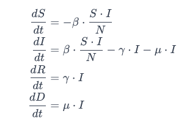

TURUNAN DIFERENSIAL in Machine Learning
Pada awal tahun 2020, dunia dihadapkan dengan tantangan besar: pandemi COVID-19. Virus corona baru menyebar dengan cepat di seluruh dunia, menyebabkan ketakutan, krisis kesehatan global, dan perubahan drastis dalam kehidupan sehari-hari. Negara-negara di seluruh dunia memberlakukan berbagai langkah pencegahan, termasuk lockdown, pembatasan perjalanan, dan protokol kesehatan ketat.
Dalam menghadapi pandemi ini, banyak peneliti dan ilmuwan berusaha untuk mengembangkan model matematis yang dapat membantu memahami dan meramalkan penyebaran virus. Salah satu model yang digunakan adalah SIRD (Susceptible, Infected, Recovered, Dead). Model ini membagi populasi menjadi empat kelompok berdasarkan status mereka terhadap penyakit: Susceptible (S), Infected (I), Recovered (R), dan Dead (D).
Namun, dengan dinamika yang kompleks dan banyak variabel yang terlibat, para peneliti mulai memanfaatkan kekuatan machine learning untuk meningkatkan keakuratan prediksi SIRD model. Model machine learning dapat membantu mengidentifikasi pola dan hubungan yang sulit diakses oleh model matematis konvensional.
Sebagai contoh, algoritma machine learning dapat menggunakan data historis tentang penyebaran virus, geografi, kebijakan pemerintah, dan faktor-faktor lainnya untuk meramalkan bagaimana virus dapat menyebar di masa depan. Model-machine learning dapat mengadaptasi diri secara dinamis terhadap perubahan situasi, seperti perubahan dalam kebijakan pemerintah, tingkat kepatuhan masyarakat terhadap protokol kesehatan, dan lainnya.
Selain itu, machine learning juga dapat digunakan untuk memahami faktor-faktor yang mempengaruhi tingkat kesembuhan dan kematian, sehingga membantu para ahli kesehatan dan pembuat kebijakan dalam merancang strategi intervensi yang lebih efektif.
Meskipun pandemi COVID-19 telah membawa dampak yang signifikan, upaya kolaboratif antara ilmuwan data, epidemiolog, dan pakar machine learning membuka peluang untuk mengembangkan pendekatan yang lebih cerdas dalam menghadapi tantangan serupa di masa depan. Dengan memanfaatkan data dan kecerdasan buatan, kita dapat mempercepat pemahaman kita terhadap pandemi, meminimalkan dampak negatif, dan membantu masyarakat untuk pulih dengan lebih cepat.
Model epidemiologi SIRD (Susceptible, Infected, Recovered, Dead) adalah model matematika yang digunakan untuk memodelkan penyebaran penyakit infeksi dalam suatu populasi. Berikut adalah rumus dasar dari model SIRD:
Susceptible (S): Individu yang dapat terinfeksi karena mereka belum terinfeksi atau tidak memiliki kekebalan.
Infected (I): Individu yang aktif terinfeksi dan dapat menyebarkan penyakit.
Recovered (R): Individu yang telah pulih dari infeksi dan memiliki kekebalan terhadap penyakit.
Dead (D): Individu yang meninggal karena infeksi.
Rumus SIRD umumnya dinyatakan dalam bentuk sistem persamaan diferensial sebagai berikut:

S (t): Jumlah individu yang masih dapat terinfeksi pada waktu t
I (t): Jumlah individu yang aktif terinfeksi pada waktu t
R(t): Jumlah individu yang telah pulih dan memiliki kekebalan pada waktu t
D(t): Jumlah individu yang meninggal karena infeksi pada waktu t
N: Total populasi.
β: Tingkat penularan (rate of transmission).
γ: Tingkat kesembuhan (recovery rate).
μ: Tingkat kematian (death rate).
Contoh
dalam sebuah desa terdapat 100 orang dimana
85 orang diantaranya rentan terinfeksi
10 orang lainnya terinfeksi
5 orang lainnya sudah kebal dengan infeksi ini
jika tingkat penularan setiap orang yang terinfeksi adalah 2,2 orang secara rate %
dimana tingkat kesembuhan ada di 0,1 %, dan tingkat kematian ada di 0,01 %
desa ini akan bebas dari pandemi covid 19 sekitar hari ke 70 ~ 150, dimana tingkat kekebalan mencapai puncaknya, dimana orang yang rentan terinfeksi tidak bertambah siknifikan, hanya terus berada di rentang 4,4 orang aja.. dan angkanya terus berkurang walau kecil.
ketika kita cek, di hari ke 150, semua warganya telah kebal terhadap covid, , infeksi selesai 0 , dan 87 warga selamat hidup, tapi di lain sisi , mereka harus mengorbankan 13 warganya
hitungan grafis disini bersifat kasar, karena ini hanya sebuah hitungan prediksi
Correct Me If I Wrong